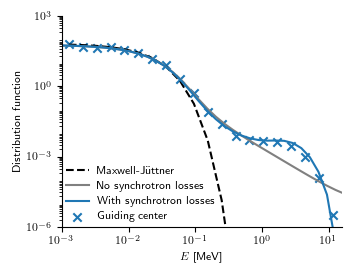
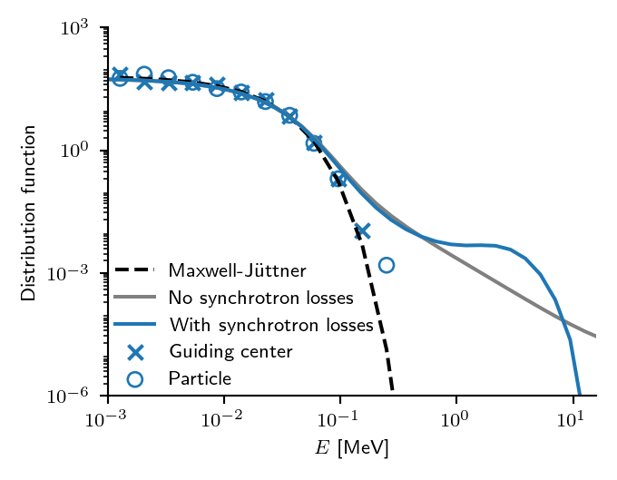
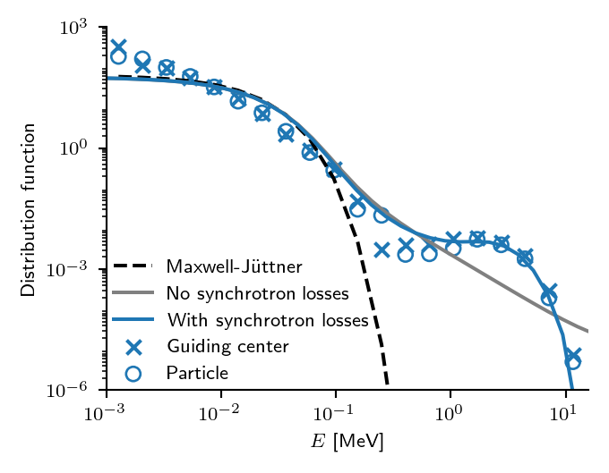

Runaway electron physics in the particle tracer
Pushers
Runaway electrons can be traced either by solving the full gyro-orbit or the motion of the guiding center. The gyro-orbit pusher utilizes the volume-preserving algorithm which preserves particle energy and is essentially a relativistic variant of the classical Boris pusher. The guiding center pusher solves the equations of motion with RK4 method, which does not preserve energy. Good starting values for the time-steps are 1e-12 for the gyro-orbit and 1e-11 for the guiding center. The pushers and their implementation are presented in this publication.
Examples particles/examples/ex6_jorek.f90 (gyro-orbit) and particles/examples/ex7_jorek.f90 (guiding center) show how the relativistic pushers are used.
- The gyro-motion is solved with
volume_preserving_push_jorekusing particle typeparticle_kinetic_relativistic. - The guiding-center motion is solved with
runge_kutta_fixed_dt_gc_push_jorekusing particle typeparticle_gc_relativistic.
Radiation reaction force
The radiation reaction force in reactor plasmas is relevant only for energetic (E » 1 MeV) electrons and it can set an upper limit for RE energy. The details of the radiation reaction force implemented in JOREK can be found here.
The radiation reaction force is enabled by calling a different variant of the particle pusher (these functions both push the marker and account for the radiation reaction force):
volume_preserving_radiation_push_jorekrunge_kutta_fixed_dt_gc_push_jorek_radreact
Collision operator
The collision operator is based on the relativistic Fokker-Planck equation, where both plasma and test particle can be relativistic. In particle simulations we are solving the corresponding stochastic equation (the Langevin equation). Therefore particle simulations are not deterministic if collisions are enabled.
The collision operator is presented here and here. The evaluation requires that look-up tables for special functions are initialized first. You can generate the data file with (the default settings should be OK for all fusion plasmas):
- Uncomment the program in
particles/pushers/mod_ccoll_relativistic.f90 - Compile
util/j2p -j 8 mod_ccoll_relativistic - Run (the generated HDF5 file is
ccolldata)./mod_ccoll_relativistic
Additionally, you'll need to initialize the ion data which requires ADAS if impurity species is present (currently code assumes main ion species and one impurity where all charge states are treated as individual species):
call init_imp_adas(0)
call ccoll_init('ccolldata', dat)
- The collisions in gyro-orbit simulations are applied as
call ccoll_kinetic_relativistic_push - In the guiding center simulations
call ccoll_gc_relativistic_push
Note that these methods only update the momentum of the particle according to the collision operator and therefore need to be used in combination with any of the previously mentioned pushers when evolving the particle in time. The particle operator operates on the whole 3D momentum whereas the guiding center operator has different operators for pitch and energy. Therefore it is possible to have only pitch scattering or only slowing down by commenting the corresponding line in . One minor thing is that the guiding center operator does not have spatial operator. This operator accounts for the classical transport so it's contribution is negligible in most cases (the gyro-orbit operator includes it inherently). Neoclassical transport is included in both operators.
For runaway electrons, the effect of the partial screening on collisions is significant. These can be included by calling:
- Gyro-orbit:
call ccoll_kinetic_relativistic_push_partialscreening - Guiding center:
call ccoll_gc_relativistic_push_partialscreening
The implementation is based on the formulas found in Hesslow's thesis. The limitation is that both operators assume that the test particle is an electron (partial screening is not relevant for ions anyway). Also the gyro-orbit operator is in fact the guiding center operator (we perform guiding center transformation in between) so now the full orbit simulations don't have classical transport either.
Benchmark
When both collisions and radiation reaction force are present, then electrons in presence of an electric field are not accelerated indefinitely but instead they form a so-called bump-on-tail distribution. We use this fact to benchmark the implementation. There are no analytical results, however, so the comparison is done with respect to kinetic code DREAM. The test code, which can also be used with actual JOREK data with small modifications, is located in particles/examples/test_bump.f90.
The results:

Results agree with DREAM result.

Turning off the electric field in JOREK produces Maxwellian distribution as expected.

Excellent match with on the bump when using the partial screening model. However, in theory there should be no difference as this test has hydrogen plasma. Therefore the difference is likely due to fact that the partial screening model uses expressions where incident particle is assumed to be highly energetic electron (in particular for the Coulomb logarithm). This could also explain why the Maxwellian is not reproduced that well unless it is an issue with timestep/Monte Carlo noise.
Plotting
The following script plot_bump.py can be used to plot the benchmark.
import numpy as np
import h5py
import matplotlib.pyplot as plt
# Temperature [eV] used in the simulations
Te = 16.2e3
# JOREK results (gc and fo): energies in keV
with h5py.File("bump_gc.h5", "r") as h5:
E_gc = ( np.sqrt(1+h5["p"][:]**2) - 1 ) * 511e-3
E_gc = np.log10(E_gc)
with h5py.File("bump_fo.h5", "r") as h5:
E_fo = ( np.sqrt(1+h5["p"][:]**2) - 1 ) * 511e-3
E_fo = np.log10(E_fo)
# DREAM results (with and without bump): energy histogram
ekin = np.linspace(-3,2,40) # Energy grid [log10(E / 1 keV)]
f_bumpon = np.array([5.42942783e+01, 5.32268922e+01, 5.16737609e+01, 4.97198558e+01,
4.72825665e+01, 4.41637419e+01, 4.02501821e+01, 3.55340567e+01,
3.01128017e+01, 2.41335301e+01, 1.79673036e+01, 1.21477229e+01,
7.25391932e+00, 3.73661258e+00, 1.63336698e+00, 6.30143786e-01,
2.31679345e-01, 8.98287072e-02, 3.92944903e-02, 1.99500624e-02,
1.17637294e-02, 7.87608799e-03, 5.97913283e-03, 5.05683229e-03,
4.76005747e-03, 4.82954766e-03, 4.67470560e-03, 3.77645843e-03,
2.28792626e-03, 9.36875797e-04, 2.25375299e-04, 2.38378940e-05,
1.98041915e-07, 5.56973669e-09, 1.75341101e-09, 5.49378996e-10,
1.70524993e-10, 5.09506772e-11, 1.65940600e-11, 7.48839590e-12])
f_bumpoff = np.array([5.39910097e+01, 5.29378339e+01, 5.14052501e+01, 4.94769819e+01,
4.70713950e+01, 4.39925535e+01, 4.01280250e+01, 3.54690278e+01,
3.01103920e+01, 2.41947194e+01, 1.80854725e+01, 1.23060305e+01,
7.42645716e+00, 3.89346607e+00, 1.75240354e+00, 7.05844946e-01,
2.73698864e-01, 1.11572854e-01, 5.01610109e-02, 2.51514945e-02,
1.37384461e-02, 7.86916932e-03, 4.65483561e-03, 2.80290204e-03,
1.70159558e-03, 1.03405676e-03, 6.28339168e-04, 3.82009779e-04,
2.32987718e-04, 1.43248441e-04, 8.93833939e-05, 5.71001460e-05,
3.77699078e-05, 2.62521616e-05, 1.95452796e-05, 1.59802485e-05,
1.40516207e-05, 6.24092063e-06, 1.70656343e-07, 3.24827106e-11])
# Bin JOREK results to histogram and turn histogram into distribution
def distfromjorek(evals):
ebin_edges = np.linspace(-3,2,25) # Energy grid [log10(E / 1 keV)]
ebins = ebin_edges[:-1] + (ebin_edges[1:] - ebin_edges[:-1]) / 2
f = np.histogram(evals, bins=ebin_edges, density=False)[0]
gamma = 10**ebins / 511e-3 + 1 # Lorentz factor
energy = 10**ebin_edges
# Turn histogram h(E) into distribution function f(E)
f = f / (energy[1:] - energy[:-1]) # Divide with bin width to change units from counts to density
f = f * np.sqrt(gamma**2-1) / (gamma**3 - gamma) # Jacobian
f = f / np.trapz(f, 10**ebins) # Normalize to int f dE = 1
return (ebins, f)
energy, f_gc = distfromjorek(E_gc)
f_fo = distfromjorek(E_fo)[1]
# Maxwellian at given energy
theta = Te/511e3
gamma = 10**energy / 511e-3 + 1
f_max = np.exp(1/theta-gamma/theta)
f_max = f_max / np.trapz(f_max, 10**energy)
cm = 1/2.54
params = {'legend.fontsize': 8,
'figure.figsize': (9*cm, 7*cm),
'axes.labelsize': 8,
'axes.titlesize': 12,
'xtick.labelsize': 8,
'ytick.labelsize': 8,
'font.size' : 8,
'text.usetex' : True}
plt.rcParams.update(params)
fig = plt.figure()
h = [None] * 5
h[0], = plt.plot(energy, f_max, color='black', linestyle='--')
h[1], = plt.plot(ekin, f_bumpoff, color='grey')
h[2], = plt.plot(ekin, f_bumpon, color='C0')
h[3] = plt.scatter(energy, f_gc, marker='x', color='C0')
h[4] = plt.scatter(energy, f_fo, marker='o', color='C0', facecolors='none')
plt.xlim(-3,1.2)
plt.ylim(10**-6,10**3)
plt.xticks([-3,-2,-1,0,1])
plt.gca().set_xticklabels([r'$10^{-3}$', r'$10^{-2}$', r'$10^{-1}$', r'$10^{0}$', r'$10^{1}$'])
plt.xlabel(r'$E$ [MeV]')
plt.ylabel(r"Distribution function")
plt.gca().set_yscale('log')
plt.yticks([1e-6, 1e-3, 1e0, 1e3])
plt.legend(h, ["Maxwell-Jüttner", "No synchrotron losses", "With synchrotron losses",
"Guiding center", "Particle"], frameon=False,loc=(0,0))
plt.gca().spines['right'].set_visible(False)
plt.gca().spines['top'].set_visible(False)
plt.tight_layout()
#fig.savefig("test_bump.eps", format="eps")
fig.savefig("test_bump.png", format="png", dpi=96*2)
plt.show()
The following Python script dream_bump.py was used for the DREAM simulation.
#!/usr/bin/env python3
#
# Recreate bump-on-tail distribution.
#
# ###################################################################
import numpy as np
import sys
import matplotlib.pyplot as plt
sys.path.append('../py/')
import DREAM
from DREAM.DREAMSettings import DREAMSettings
import DREAM.Settings.Equations.IonSpecies as Ions
import DREAM.Settings.Solver as Solver
import DREAM.Settings.CollisionHandler as Collisions
import DREAM.Settings.Equations.HotElectronDistribution as FHot
import DREAM.Settings.Equations.RunawayElectrons as Runaways
import DREAM.Formulas
def run(hot_pmax=2, hot_nxi=40, hot_np=20,
pmin=0.1, nt=50, c='black'):
ds = DREAMSettings()
ds.collisions.lnlambda = Collisions.LNLAMBDA_THERMAL
E = -0.03
n = 1e19
T = 16.2e3
#print(E/DREAM.Formulas.getEc(T, n))
#print(E/DREAM.Formulas.getED(T, n))
# Set E_field
ds.eqsys.E_field.setPrescribedData(E)
# Set temperature
ds.eqsys.T_cold.setPrescribedData(T)
# Set ions
ds.eqsys.n_i.addIon(name='H', Z=1, iontype=Ions.IONS_PRESCRIBED_FULLY_IONIZED, n=n)
# Hot-tail grid settings
ds.hottailgrid.setNxi(hot_nxi)
ds.hottailgrid.setNp(hot_np)
ds.hottailgrid.setPmax(hot_pmax)
ds.eqsys.f_hot.setHotRegionThreshold(
pThreshold=pmin,
pMode=FHot.HOT_REGION_P_MODE_THERMAL)
ds.collisions.collfreq_mode = Collisions.COLLFREQ_MODE_FULL
ds.eqsys.f_hot.setSynchrotronMode(True)
# Set initial hot electron Maxwellian
ds.eqsys.f_hot.setInitialProfiles(n0=n/1e5, T0=T)
# Set runaway grid
ds.eqsys.n_re.setAvalanche(avalanche=Runaways.AVALANCHE_MODE_NEGLECT)
ds.runawaygrid.setEnabled(False)
# Set up radial grid
ds.radialgrid.setB0(4)
ds.radialgrid.setMinorRadius(0.1)
ds.radialgrid.setWallRadius(0.1)
ds.radialgrid.setNr(1)
# Choose solver
#ds.solver.setType(Solver.LINEAR_SOLVER_LU)
#ds.solver.setType(Solver.NONLINEAR)
ds.solver.setType(Solver.LINEAR_IMPLICIT)
ds.solver.preconditioner.setEnabled(False)
# Set time stepper
ds.timestep.setTmax(1e1)
ds.timestep.setNt(nt)
# Save settings to HDF5 file
ds.save('dream_settings.h5')
do = DREAM.runiface(ds)
fhot = do.eqsys.f_hot
ekin = (np.sqrt(1+do.eqsys.grid.hottail.p**2) - 1) * 511e3 / 1e6
f = np.abs(fhot.angleAveraged()[-1,0,:])
f = f / np.trapz(f, ekin)
plt.plot(np.log10(ekin), np.log10(f), color=c)
# Interpolate and print for plotting
f = np.interp(np.linspace(-3,2,40),np.log10(ekin),f)
print(f.tolist())
plt.figure()
# Visualizing multiple runs simultaneously we can check the convergence
run(hot_pmax=100, hot_nxi=360, hot_np=2000, nt=10, c='C0')
#run(hot_pmax=100, hot_nxi=360, hot_np=2000, nt=10, c='C1')
#run(hot_pmax=100, hot_nxi=360, hot_np=2000, nt=10, c='C2')
plt.xlim(-3,1.2)
plt.ylim(-6,3)
plt.xticks([-3,-2,-1,0,1])
plt.show()